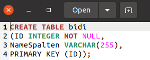
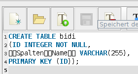
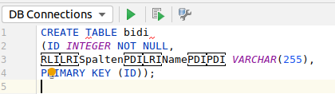
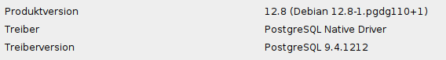
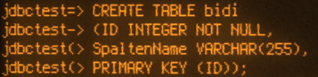
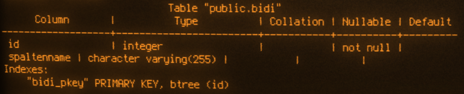
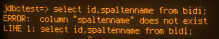
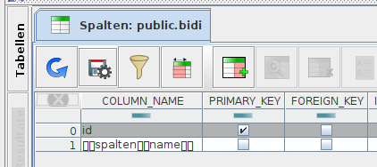
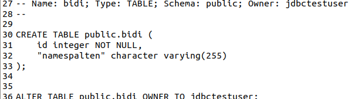

Trojan Source mit SQL und Postgres
Nachdem ich das hochinteressante Paper Trojan Source: Invisible Vulnerabilities gelesen hatte kam ich durch einen Post auf Mastodon (leider nicht öffentlich einsehbar) auf Ideen... auf Ideen...
Der Mastodon-Post zeigte eine Tabelle in psql, die eine Spalte beinhaltete, deren Name ein Kätzchen war (Unicode-Emoji). Der sorgte dafür, dass sämtliche Projekte einen Platz auf meiner Liste nach unten rutschten, denn ich wollte nun wissen, ob das in dem Paper vorgestellte Verfahren auch dazu benutzt werden könnte, schadhaften SQL-Code vor einem Reviewer zu verstecken.
Dazu stellte ich mir zunächst eine einfache Aufgabe: Ich wollte einen Spaltennamen oder allgemeiner: Identifier mit solchen nicht sichtbaren Unicode-Zeichen versehen, sodass der Code in einem Editor, Terminal oder dem Datenbanktool des Vertrauens anders aussähe, als das, was die Datenbank verarbeitet. Dazu bereitete ich ein SQL-Statement vor, das einen zusammengesetzten Spaltennamen SpaltenName enthielt, der allerdings mit entsprechenden Bidi-Codes so ergänzt war, dass eine Software, die diese Codes interpretiert stattdessen NameSpalten anzeigen müsste.
Hier ein Beispiel dafür in Gedit 2.36.2 unter Ubuntu Focal Fossa:

SQL-Script in Gedit 2.36.2Ich freue mich sagen zu können, dass auch die sQLshell sich hier nicht hereinlegen lässt (und damit auch den Anwender nicht hereinlegt) - sie zeigt an, dass im SQL weitere Zeichen enthalten sind:

SQL-Script in sQLshellIntellij Idea stellt die Goldrandlösung dar: solche Codes werden nicht nur nicht interpretiiert, sondern stattdessen als Pseudo-Zeichen dargestellt:

SQL-Script in sQLshellNachdem ich mir also verschiedene Editoren und IDEs zum Umgang mit diesen speziallen UInicode-Characters angesehen hate, wollte ich herausbekommen, wie sich eine Datenbank verhält, wenn sie ein mit solchen Zeichen versehenes Statement vorgesetzt bekommt. Meine ersten Tests führte ich mit einer etwas veralteten Version Postgres durch:

Postgres Version im TestIch benutzte zur Interaktion damit zunächst psql in verschiedenen Terminals - darunter gnome-terminal und CoolRetroTerm. Interessant fand ich dabei zunächst, dass in diesen Terminals die Steuercodes im Statement nicht angezeigt und auch nicht interpretiert wurden - Man hätte meinen können, dass dieses Statement überhaupt keine Steuerzeichen enthielt:

SQL-Script in CoolRetroTermJetzt wurde ich natürlich neugierig, ob sich das Statement absetzen lassen würde - es funktionierte. Und bei der Abfrage der Tabellenstruktur in psql mittels \d bidi erhielt ich daraufhin folgendes Ergebnis:

Tabellenstruktur mittels psql in CoolRetroTermEin entsprechendes Select schlug aber fehl:

Select-Statement und Ergebnis mittels psql in CoolRetroTermEin normaler Mensch wäre jetzt zunächst erst einmal verwirrt: Er sieht den Spaltennamen, aber wenn er ihn benutzen möchte, bekommt er als Fehlermeldung, dass exakt dieser - den erwomöglich auch noch aus der Antwort auf das vorhergehende Statement kopiert hat - nicht existiert? Was ist denn hier passiert? Die Erklärung wird offensichtlich, wenn man sich die Tabellenstruktur in anderen Datenbank-Werkzeugen ansieht - zum Beispiel in der sQLshell:

Tabellenstruktur in der sQLshellMan erkennt, dass die Control-Characters einfach Teil des Identifiers geworden sind. Um die Anfrage korrekt zu formulieren, müssen diese also auch wieder im Namen auftauchen.
Postgres ist auch konsistent: Wenn die Tabelle mittels pg_dump exportiert wird, ist das Ergebnis eine Text-Datei in Unicode-Encoding, in dem - mit Gedit betrachtet - wieder der Name NameSpalten auftaucht, da alle Zeichen exportiert wurden und diese natürlich wieder interpretiert werden:

Ergebnis von pg_dump in Gedit 2.36.2Leider (oder glücklicherweise - kommt ganz auf die Perspektive an) konnte ein tatsächlicher, ernstzunehmender Angriff auf Postgres nicht durchgeführt werden, weil alle Zeichen in einem Statement interpretiert werden und die Bidi-Codes in diesem Kontext keine gültigen Zeichen für Postgres darstellen. Das sind sie nur in Identifiern und mit dieser Einschränkung war es (zumindest mir) nicht möglich, klassische Szenarien wie sie beispielsweise aus SQL-Injection bekannt sind - etwa Tabellen löschen oder Datensätze ändern - umzusetzen.
Artikel, die hierher verlinken
Trojan SQL
09.12.2021
Ich habe bereits über Ideen geschrieben, die TrojanSource-Vulnerability in anderen Kontexten zu untersuchen - ein Vorkommnis in dem Job, mit dem ich mir das Geld für Kuchen verdiene hat mich jetzt angestachelt, diese Untersuchung tatsächlich umfangreich und gründlich durchzuführen. Dieser Beitrag wurde zum CCC End-of-year event 2021 eingereicht und abgelehnt.


Vor 5 Jahren hier im Blog
-
Another Round of Trac
02.09.2017
Ich habe nach nunmehr über 5000 Tickets in meinem privaten Ticket-Management-System darüber nachgedacht, wie ich es weiter verbessern und noch nahtloser damit arbeiten kann. Mein Hauptanliegen war, die Reihenfolge der Abarbeitung der Tickets auf einfache Art und Weise festlegen zu können
Weiterlesen...
Tags
Android Basteln C und C++ Chaos Datenbanken Docker dWb+ ESP Wifi Garten Geo Git(lab|hub) Go GUI Gui Hardware Java Jupyter Komponenten Links Linux Markdown Markup Music Numerik PKI-X.509-CA Python QBrowser Rants Raspi Revisited Security Software-Test sQLshell TeleGrafana Verschiedenes Video Virtualisierung Windows Upcoming...
Neueste Artikel
- Bessere XPath-Suche im XML-Editor
Ich habe den unter anderem im XPathLab eingesetzten Editor für XML-Dokumente um neue Funktionalitäten erweitert
Weiterlesen... - LinkCollections 2022 XI
Nach der letzten losen Zusammenstellung (für mich) interessanter Links aus den Tiefen des Internet für dieses Jahr folgt hier nunmehr die nächste:
Weiterlesen... - XSL-Transformation für java.beans.XMLDecoder
Ich habe mich vor einigen Wochen in einer Diskussion in einem meiner $dayjob-Projekte von einer konkreten Aufgabe zum Nachdenken anregen lassen: Wie schaffe ich es, Daten zwischen zwei Softwareinstanzen zu übertragen, wenn sich die Version und damit die Struktur des Schemas zwischen beiden unterscheidet?
Weiterlesen...
Manche nennen es Blog, manche Web-Seite - ich schreibe hier hin und wieder über meine Erlebnisse, Rückschläge und Erleuchtungen bei meinen Hobbies.
Wer daran teilhaben und eventuell sogar davon profitieren möchte, muß damit leben, daß ich hin und wieder kleine Ausflüge in Bereiche mache, die nichts mit IT, Administration oder Softwareentwicklung zu tun haben.
Ich wünsche allen Lesern viel Spaß und hin und wieder einen kleinen AHA!-Effekt...
PS: Meine öffentlichen GitHub-Repositories findet man hier.